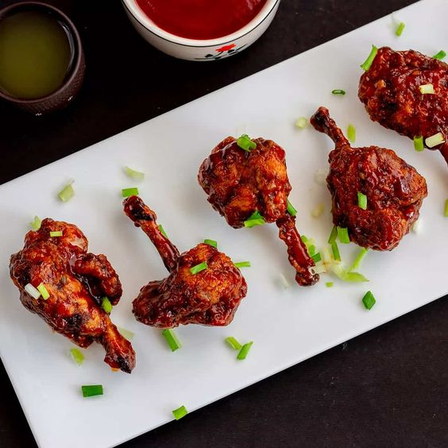

1. Marination:
Partially pull apart the chicken from the bone and gather it on the top. Add 3 tbsp of ginger garlic paste, 2 tbsp soy sauce, 2 tsp chilli powder and salt to taste. Marinate for half an hour. Add the all purpose flour and egg and coat all the pieces evenly.
2. Making lollipops:
Heat the oil on medium high flame. Deep-fry the drumsticks till its golden brown in colour. Crispy chicken lollipops are now ready and these can be enjoyed as it is.

3. Preparing The Gravy:
To a pan, add oil and heat it. Saute remaining garlic ginger paste and add the schezwan sauce after. Add the soy sauce ketchup sugar and vinegar to the pan. After cooking it a little add the spices and sugar to the mixture. Now make a slurry by mixing cornstarch and water in a bowl. Add half of the slurry and bring the sauce to a boil. If the consistency is too thin for your liking add the remaining slurry and your sauce will be ready. Finally toss the lollipop in the sauce.
